1× target32px canvas
1× target32px canvas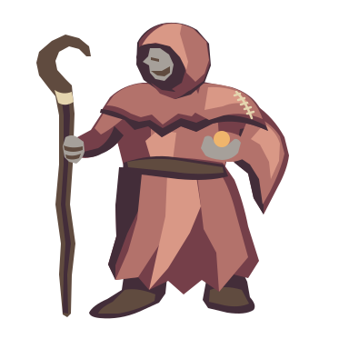
1× target
32px canvas

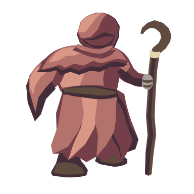
1× target
32px canvas

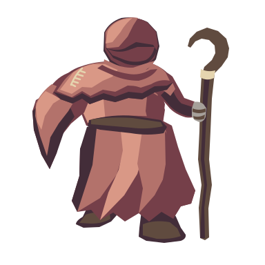
1× target
32px canvas
Four repaired SVG candidates. Opposing face/boot angles and 27.7–28.7×32.6–32.9px visible footprints improve on the narrow pilot. Exact generated outputs remain below: the refinement introduced transparent waist gaps, repaired separately with four native torso planes per view.
Native torso joins restore mantle-to-belt support. Painted cloth and equipment stay attached; both front and rear quarters remain candidates for review. Upper: 4× inspection. Lower: 1× target scale and tighter 32px canvas.
1× target32px canvas


These untouched extracts show the missing body panels. Retained as the generated parent; do not select these as finished figures. Upper: 4× inspection. Lower: 1× target scale and tighter 32px canvas.
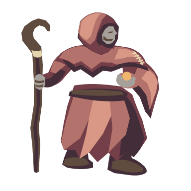
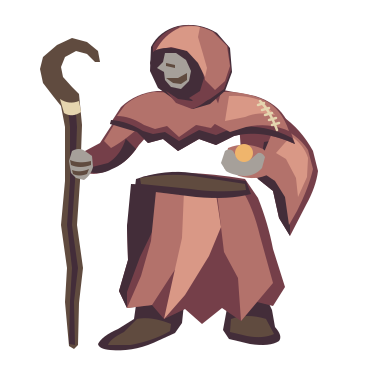
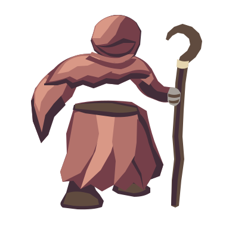
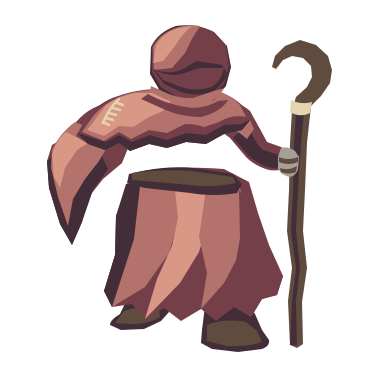
The first source remains unchanged. It is narrower at approximately 20×32px, and the paired headings repeat. All three rows use the same 38.4px native canvas, not fitted-to-bounds enlargement. Upper: 4× inspection. Lower: 1× target scale and tighter 32px canvas.
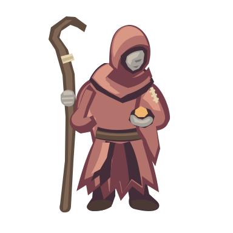
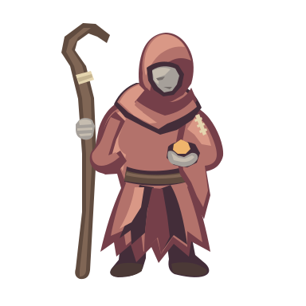
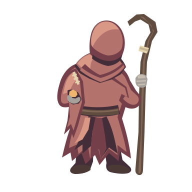
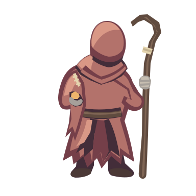
Exact generated refinement sheet · Exact initial eight-view sheet · Initial hound/acolyte preview
Review and manual repair · Exact shared request · Usage · Reservation · Validation · Canonical source lineage
Palette, hood, ivory left-shoulder stitches, right-hand bent staff and left-hand ember carried forward by text specification. Native SVG generation has no image-input reference; image-conditioned consistency is not claimed. Twelve generated views across two calls; four separately repaired derivatives. Zero animation frames.